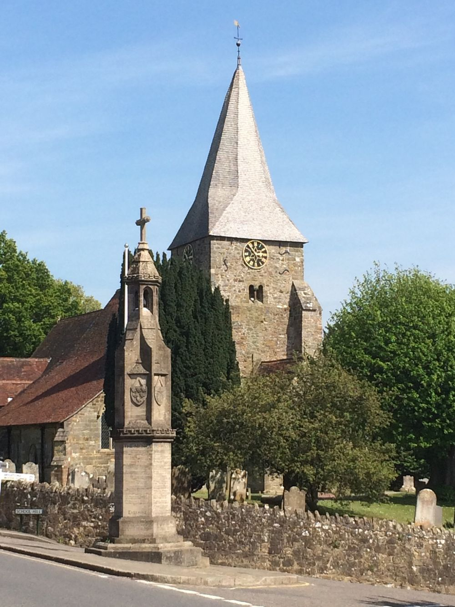

Burwash
St Bartholomew's
About us
St Bartholomew's sits at the heart of Burwash village, looking out over beautiful views down the Dudwell Valley. We are a community that meets to worship God, grow together in love and fellowship, and serve our village.
Services
Our services range from Wednesday Club, an informal midweek messy church for primary-aged children, to contemporary family services and traditional services from the Book of Common Prayer. All our services are welcoming and family-friendly.

Visiting
- Where
- High Street, Burwash
- Parking
- Parking near the church can be difficult. Please use the village car park next to the Bear Inn.
- Toilets
- There's no toilet in church at the moment. The nearest public toilets are in the village car park.